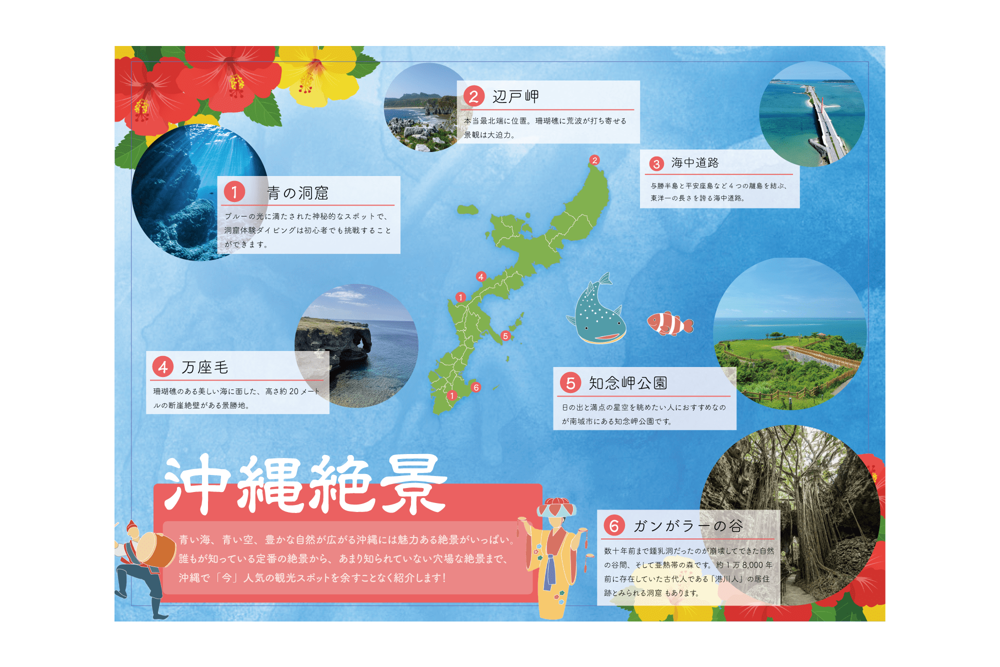

HIYU YAMAUCHI PORTFOLIO
contact
TOP
GRAPHIC-WORKS | 沖縄絶景
沖縄絶景

制作期間
5時間 (2022.9)
人数
1人
担当
デザイン
使用技術
Adobe Illustrator
作品概要
架空のタブロイド紙のデザインを制作しました。沖縄の絶景スポットをざっくりと紹介しています。
こだわり
写真を加えてイメージしやすい様にしました。また色使いやフォントで沖縄の雰囲気を演出しました。
前の作品を見る
2 / 4
次の作品を見る